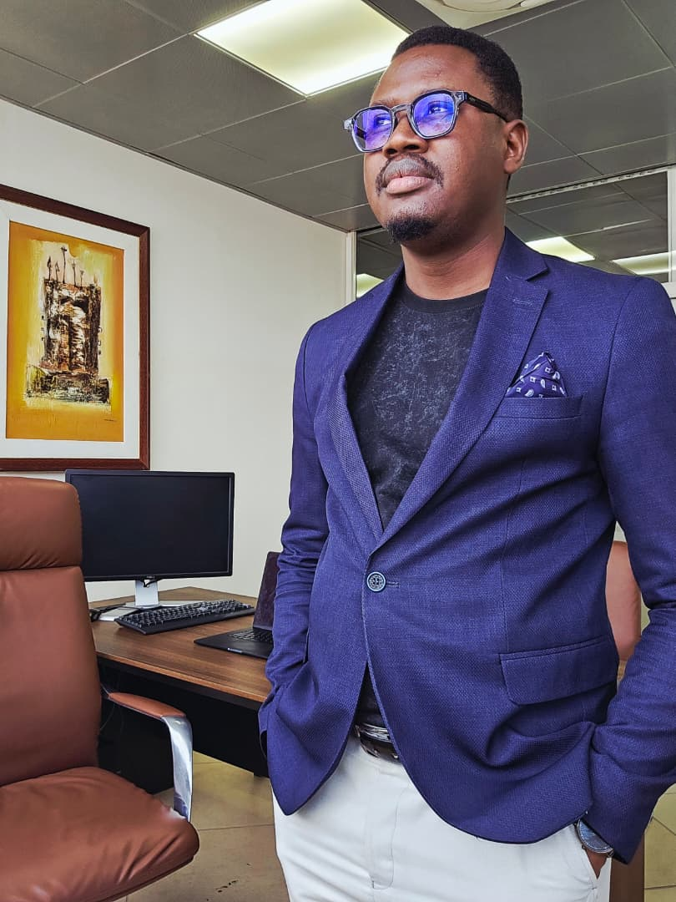

Présentation
Marc Abdallah Sarr – L’homme qui bâtit
Il ne parle pas fort de son ambition. Il la construit. Pendant que d’autres la proclament, lui la travaille, dans le silence des décisions, la rigueur des choix et la constance de l’effort. Marc Abdallah Sarr fait partie de ces hommes qui avancent sans bruit, mais dont les actions laissent des fondations solides. Il a commencé là où tout commence : au bas de l’échelle. À écouter, à répondre, à comprendre que derrière chaque chiffre, il y a un visage. Conseiller, assistant, responsable, directeur : chaque titre n’a jamais été un objectif, seulement une conséquence. Il connaît la valeur d’un salaire gagné honnêtement, la fatigue des trajets matinaux, la pression des résultats et le poids d’un nom à porter. Et s’il parle de capital humain, ce n’est pas un concept, c’est une conviction, forgée au contact des talents qu’il a vus s’élever et de ceux qui se sont éteints faute d’accompagnement. Alors il a décidé de bâtir. Pas pour impressionner, mais pour structurer. Pas pour dominer, mais pour élever. MARCINVEST n’est pas un simple groupe : c’est une déclaration. La déclaration que le Sénégal mérite des entreprises solides, des leaders responsables et des visions ancrées dans la réalité. Il avance avec méthode, pense en stratégie, mais agit toujours avec cœur. Marc Abdallah Sarr, ce n’est pas le bruit : c’est la constance. Ce n’est pas l’éclair : c’est le pilier. Certains cherchent la reconnaissance, lui cherche l’impact. Et s’il fallait résumer sa trajectoire en une seule phrase : construire durablement, servir dignement, élever humainement et bâtir des partenariats solides.

Fondateur / Leader — MARCINVEST
Partenaires et fournisseurs